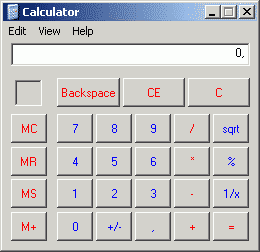

A top-level window is a window that is not a part of other window.
An overlapped window is a top-level window that typically has a title bar, menu bar, border and client area. It is meant to serve as an application's main window. Example - Quick Macros main window.
A pop-up window is a special type of top-level window used for dialog boxes, message boxes, and other temporary windows. Example - Quick Macros Options dialog. Popup windows have WS_POPUP style flag (0x80000000). Window style is displayed in QM status bar. If first character after "0x" is 8, 9, A or B, it is popup window.
A child window (or "control") is confined to the client area of another window. Client area is window area except title bar (with buttons and icon), menu bar, scroll bars and border. The parent window (window that contains the child window) can be top-level window or another child window. An application typically uses child windows to divide the client area of a parent window into functional areas.
Almost all macro commands that work with windows also work with child windows.
In the picture, Calculator is top-level window. It has several child windows - edit, static, several buttons. For example, C is child of Calculator, and Calculator is parent of C. Buttons in the title bar, and the menu bar, are not child windows. This area, plus border, is nonclient area.
